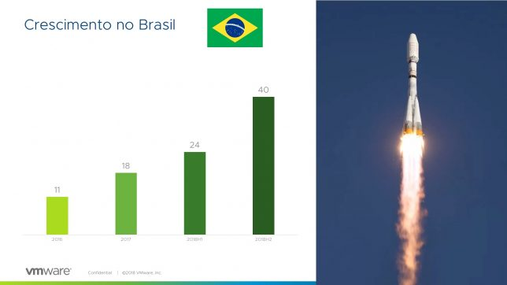

VMware vExpert - Classe de 2018 - Segunda Turma
Blog vExpert VMwareCompartilhe esse post nas redes sociais...
Olá Homelabers,
Eu estou muito, mas muito atrasado com o meu schedule de posts, mas eu vou tentar chegar lá!
Bom, agosto chegou e com ele mais uma turma de vExperts. A VMware abre inscrições para o programa vExpert duas vezes por ano e hoje foram anunciados os vExpert do segundo semestre de 2018.
Esse ano foi diferente, pois pude acompanhar de perto, todo o processo, desde a abertura das inscrições, o processo de votação e escolha pela banca (e eu fiz parte da banca :) ) até a divulgação.
Estou muito feliz, pois os números do Brasil estão crescendo cada vez mais. E isso graças ao esforço de divulgação dos vExperts atuais. Finalmente, “a galera” está entendendo o processo e principalmente O QUE É O vExpert! Então o nosso trabalho está dando resultados.
Falado de números:
O número de vExperts do Brasil deu um salto considerável, passamos de 24 vExperts para 40 vExperts, ou seja, praticamente dobramos a nossa participação, sendo o 5o. pais com mais vExperts aprovados. Isso é uma grande conquista!

Então amigos… vamos se juntar ao coro e dar parabéns a todos os novos vExperts Brasileiros. Prestigiem seus blogs, sigam no twitter, Facebook, Youtube, etc…
Prestigiem esse pessoal… eles merecem, eles foram um passo além do dia a dia e contribuíram muito para a comunidade.
Então chega de enrolação e vamos para a lista de VMware vExperts do Brasil:
Lista de vExperts no Brasil
Parabéns a todos! Eu acredito que conheço a maioria de vocês, se não pessoalmente, virtualmente, mas sei que vocês fizeram por merecer para estar nessa lista.
Legal, fui aprovado e agora?
Primeiramente, parabéns e seja bem vindo a essa comunidade global. Somos mais de 1800 vExperts espalhados pelo mundo.
Comemore bastante. Aproveite que é sexta-feira e vá comemorar com os seus amigos, sua família, peça ao chefe para pagar o almoço, conte para todo mundo, acompanhe a hashtag #vExpert e comece a interagir com seus novos amigos . Esse é o seu dia!
O “mais fácil” já foi, entrar no programa, agora você tem que manter o nível. Continuar engajado, continuar participando, continuar criando conteúdo, continuar divulgando o programa.
O Corey (@vCommunityGuy) logo mais vai entrar em contato com você para passar todas as informações, mas é importante que você acesse o seu perfil no vexpert.vmware.com para atualizar os dados e assinar o NDA.
Outra coisa importante, siga o @arielsanchezmor no twitter e mande uma DM para ele. Você vai receber o já tradicional e-mail com dicas do Ariel.
Update:
https://twitter.com/arielsanchezmor/status/1025357113596502018
https://twitter.com/vexpert_slack/status/972377777172307968
E eu já ia me esquecendo, temos um grupo do vExpert Brasil no Telegram, sinta-se à vontade para participar. Esperamos você lá. O link para entrar é: https://t.me/vExpertBrasil (só aceitamos vExperts no grupo).
Não foi a minha vez, e agora?
Se você (especialmente Brasileiro) aplicou para o programa e não foi aprovado, a minha dica é: NÃO DESISTA! Muitos fatores podem ter influenciado, você não foi reprovado, apenas não chegou a sua hora e você não está pronto. Mas não desista!
Procure algum outro vExpert na sua região e peça ajuda, conselhos! Peça para que ele seja seu mentor, que ele te de dicas e te ajude a criar conteúdo, participar da comunidade. Certamente, você estará nessa lista na próxima chamada!
Outras dicas:
* Se engaje na comunidade. Contribua, pertença, converse, pergunte! Não fique passivo, coloque o seu nome lá!
* Se você ainda não está no twitter, essa é a hora. Crie sua conta ou reative aquela sua conta antiga e "jump in". [Aqui](http://homelaber.com.br/os-50-maiores-influenciadores-do-mundo-vmware-no-twitter/), [aqui](http://homelaber.com.br/o-twitter-e-a-comunidade-vmware/) e [aqui](http://homelaber.com.br/vexpert-classe-de-2018/) tem uma lista de pessoas para você começar a seguir.
* Participe de meetups, [procure um VMUG](https://www.vmug.com/Join) em sua região (hoje no Brasil temos VMUGs em SP, RJ, Brasília, MG e RS), [participe do vBrownBag Brasil](http://vbrownbagbrasil.com.br/apresente-se-no-vbrownbag-brasil/) e eventos que acontecem o ano todo no Brasil. Mas quando eu falo em participar, é para ser protagonista. Monte uma palestra, conte o que você sabe, estude um tópico e apresente. Você e a comunidade só tem a ganhar!
* [Inicie um blog](http://homelaber.com.br/como-comecar-um-blog-de-tecnologia/)! Você tem muita coisa a compartilhar, acredite!
* Mais uma vez, procure um [vExpert na sua região](https://vexpert.vmware.com/directory) e peça ajuda. Veja o que ele faz e faça igual (mas do seu jeito!).
* Aplique novamente no final do ano!
Repense o que você poderia ter feito melhor e comece a trabalhar agora. Não desista.
Prestigie os vExperts
Aos leitores do blog, peço que prestigiem a todos os vExperts, acompanhando e comentando em seus blogs e redes sociais, apoiando mesmo, pois o nosso “trabalho” é criar conteúdo e trazer informações a vocês!
A todos, recomendo a leitura desse post: O que significa ser um vExpert
Compartilhe esse post nas redes sociais...Valdecir Carvalho
Nerd e pai orgulhoso da Mariana e João. Profissional Sênior de TI com foco em arquitetura de infraestrutura e cloud computing. Blogueiro, podcaster, palestrante, amante de comunidades técnicas, fotógrafo aposentado e adora jogos antigos.
#vExpert · #VMUGLeader · #VUGBrasil · #vBronwBagBrasil · #VeeamVanguard